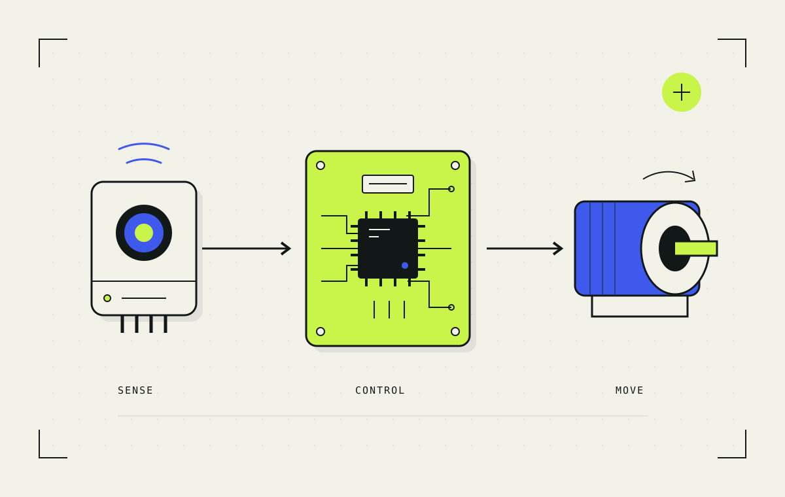

Control systems / illustratedRemote measurement
and motor control.
At Lunar Resources, I led the controls team and built an interface for remote measurement and control. I used C++ on Arduino to connect sensor and thermocouple readings to PID control and stepper motors.
Inside the build
My contribution
I also designed a server-rack enclosure in Onshape. My fabrication work included soldering, 3D printing, plasma cutting, CNC, and laser cutting.
Control Systems Consultant Houston, Texas